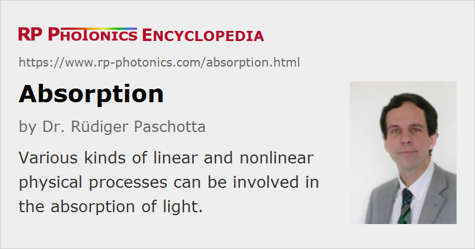

Absorption
Definition: a process where light energy is converted to another form of energy
More specific terms: infrared absorption, excited-state absorption, pump absorption, light-induced absorption, multiphonon absorption, multiphoton absorption, two-photon absorption, pump absorption
German: Absorption
How to cite the article; suggest additional literature
Author: Dr. Rüdiger Paschotta
Through different kinds of processes, which are explained in the following section, light can be absorbed in various media. This implies that the optical energy is converted into some other form of energy. In most cases, the energy is eventually transformed into heat (thermal energy).
The term absorption is not only used for absorption processes, but also often for related quantities, e.g. instead of absorption coefficient.
Absorption Processes
The following kind of physical processes can be involved in the linear absorption of light:
- In an insulating material, having a certain band gap energy, strong linear absorption occurs when the photon energy of the light exceeds the bandgap energy (which is often possible only in the ultraviolet spectral region). Each absorption of a photon causes the excitation of one electric carrier across the bandgap, so that one obtains one additional carrier in the conduction band and one hole in the valence band. The electronic excitation energy can subsequently be converted to heat (i.e., to multiple phonons) or partially to fluorescence light, often within nanoseconds or even faster.
- Strongly linear absorption is also possible at long (infrared) wavelengths through multiphonon absorption. For example, in fused silica that happens for wavelength beyond the infrared absorption edge at approximately 2 μm.
- Similar processes occur in semiconductors, where however the bandgap energy is smaller, so that strong absorption is possible also in the visible spectral region.
- The situation is different in metals, where the conduction band is not completely filled. Due to strong reflection, one can have absorption only within a thin surface layer, which can nevertheless be substantial in certain wavelength regions. The absorption properties can also depend on the roughness of the surface, and are sometimes intentionally modified by nano-structuring.
There are also many cases where a material contains some absorbing dopant while the host material itself exhibits only negligible absorption. This is the case for solid-state (doped-insulator) gain media.
In some special cases, nearly all of the absorbed light causes fluorescence rather than heat, and there can be even a net cooling effect (→ laser cooling).
Linear and Nonlinear Absorption
Linear absorption means that the absorption coefficient is independent of the optical intensity. There are also nonlinear absorption processes, where the absorption coefficient is a linear or higher-order function of the intensity. For example, two-photon absorption is a process where two photons are absorbed simultaneously, and the absorption coefficient rises linearly with the intensity. Multiphoton absorption processes of higher order are often involved in laser-induced damage caused by intense laser pulses.
Saturable absorption can also be considered as a kind of nonlinear absorption. Here, however, the absorption coefficient is reduced under the influence of intense light, e.g. because the starting electronic level for the light absorption is depleted.
Parasitic Absorption
In cases where a medium or an optical component should normally not be absorbing, some nevertheless occurring and disturbing amount of absorption is often called parasitic absorption or residual absorption.
Parasitic absorption occurs in laser crystals and nonlinear crystal materials, for example, as a result of impurities (extrinsic absorption), or sometimes due to multiphonon absorption (intrinsic absorption, not avoidable even with perfect material quality). For many photonic devices, parasitic absorption limits the power handling capability.
Effects on the Absorbing Medium and its Optical Properties
In most cases, absorption of light causes heating of the absorbing medium and subsequently thermal expansion. The heating is often strongly inhomogeneous; for example, it may occur within a focused laser beam. The local thermal expansion then leads to mechanical stress in the medium, which can even result in fracture when the deposited thermal power or energy is sufficiently high. Further, the temperature causes a slight local modification of the refractive index, which (together with stress-related effects) can cause thermal lensing effects.
Further, the modified population of electronic states can modify the absorption at the wavelength of the absorbed light and also at other wavelengths. It has already been mentioned that absorption may be saturated. Also, one may obtain excited-state absorption at wavelengths where the material would normally not be absorbing. In semiconductors, at high intensities one obtains free carrier absorption.
At some wavelengths, one may obtain laser amplification for strong enough excitation of the medium, usually involving a population inversion. In an optically pumped laser gain medium, sufficiently strong pump absorption is required, since only absorbed pump light can be utilized.
Absorption of light can also have electrical effects. For example, there are photoresistors, where the electrical resistance is reduced by absorbed light. In photodiodes and phototransistors, one exploits the internal photoelectric effect, related to the excitation of electric carriers by light absorption.
If light is absorbed by atoms or molecules of a gas, light forces associated with the absorption may become relevant. They can be used for Doppler cooling, for example.
Quantifying Absorption
Absorption in a semi-transparent medium is usually quantified with an absorption coefficient, telling which fraction of the optical power is lost per unit length. The inverse of an absorption coefficient is called an absorption length. The absorption of a given length of material (e.g. of a plate with a certain thickness) can be quantified with an absorbance.
If absorption is caused by some absorbing dopant, the contribution to the absorption per dopant atom or ion is often quantified with an absorption cross section.
As absorption coefficients are wavelength-dependent, one often produces absorption spectra, showing an absorption coefficient as a function of wavelength or optical frequency.
Non-transparent objects can be attributed an absorptance, which is the fraction of incident light which is absorbed rather than transmitted, reflected or scattered.
Generation of Quantum Noise via Absorption
Even simple linear absorption processes introduce some amount of quantum noise. This can be intuitively understood by considering that some of the incident photon are randomly removed, while other photons remain in the light beam. An initially perfectly regular stream of photons (→ amplitude-squeezed light) would thus be converted into a random stream of photons, exhibiting some intensity noise.
If the incident light is in a coherent state, exhibiting the standard shot noise level, the extra noise added through linear absorption is just enough to keep the residual light at the shot noise level (which is relatively stronger for weaker light).
Nonlinear absorption processes can modify quantum noise properties in more complicated ways.
Questions and Comments from Users
Here you can submit questions and comments. As far as they get accepted by the author, they will appear above this paragraph together with the author’s answer. The author will decide on acceptance based on certain criteria. Essentially, the issue must be of sufficiently broad interest.
Please do not enter personal data here; we would otherwise delete it soon. (See also our privacy declaration.) If you wish to receive personal feedback or consultancy from the author, please contact him e.g. via e-mail.
By submitting the information, you give your consent to the potential publication of your inputs on our website according to our rules. (If you later retract your consent, we will delete those inputs.) As your inputs are first reviewed by the author, they may be published with some delay.
See also: absorption coefficient, absorption length, absorbance, absorptance, nonlinear absorption, two-photon absorption, quantum noise
and other articles in the category general optics
|  |
If you like this page, please share the link with your friends and colleagues, e.g. via social media:
These sharing buttons are implemented in a privacy-friendly way!